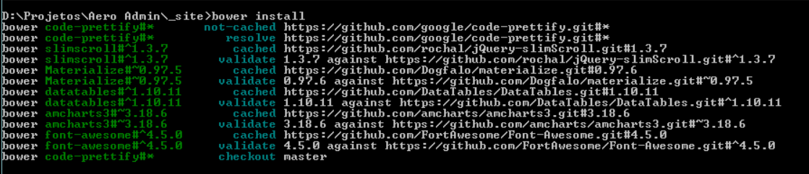
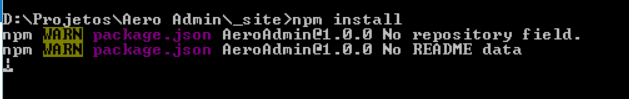
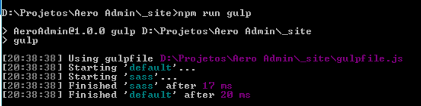
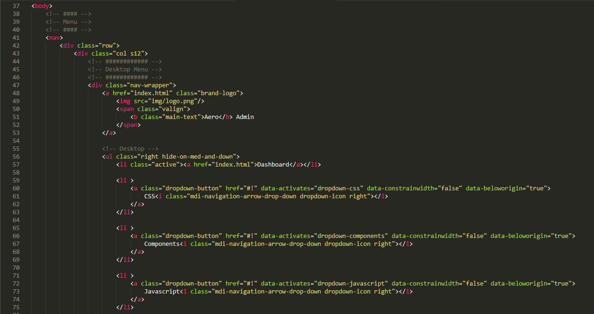
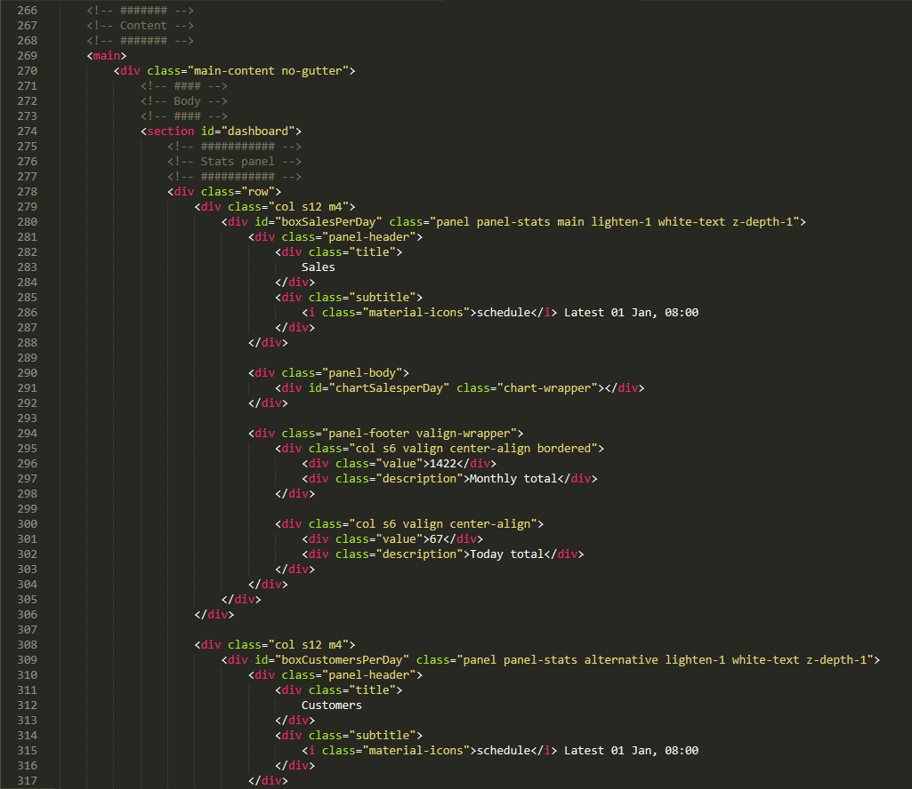
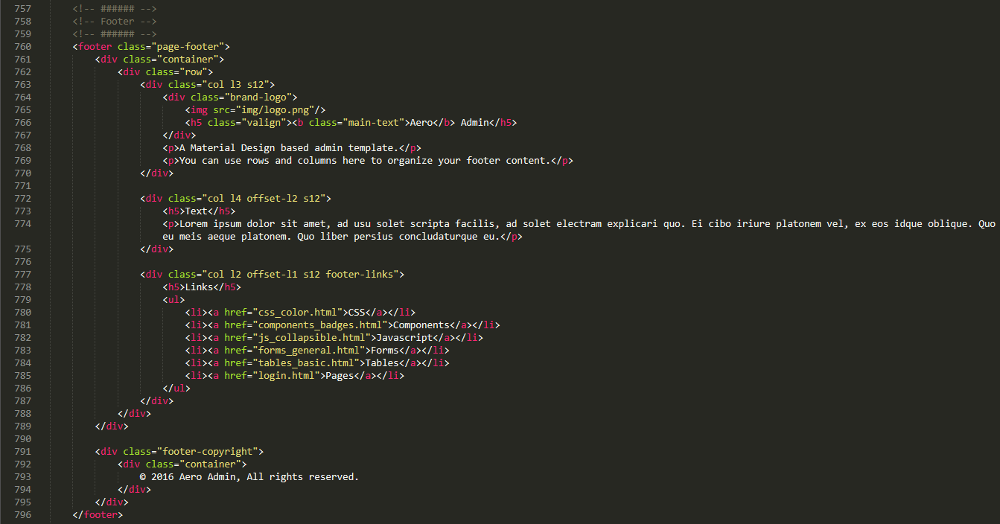
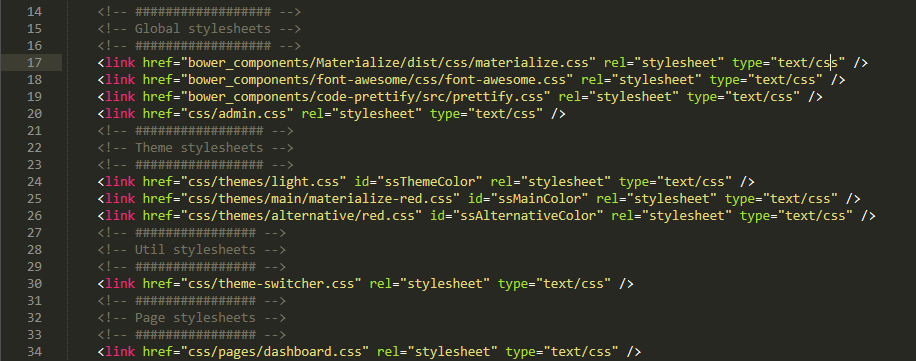
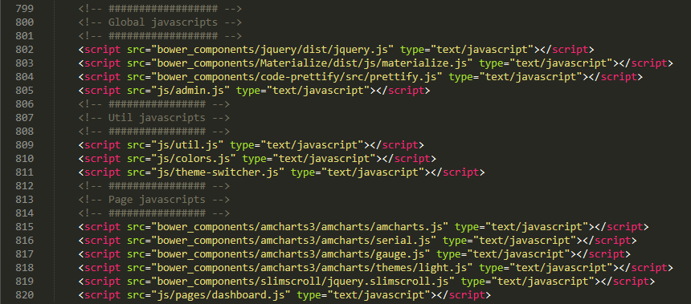

				<section id="documentation">
					<div class="row">
						<div class="col s12 m9 l10">
							<!-- ############ -->
							<!-- Introduction -->
							<!-- ############ -->
							<div id="introduction" class="scrollspy">
								<div class="row no-gutter">
									<div class="col s12">
										<h4 class="main-text lighten-1">{{ site.name }} v{{ site.version }}</h4>
										<p>Thank you for purchasing my theme.</p>
										<p>If you have any questions that are beyond the scope of this help file, please feel free to email via my user page contact form <a href="http://themeforest.net/user/{{ site.themeforestUser }}">here</a>.</p>
										<p>Thanks so much!</p>
									</div>
								</div>
							</div>


							<!-- ############ -->
							<!-- Installation -->
							<!-- ############ -->
							<div id="instalation" class="scrollspy margin-top-35">
								<div class="row no-gutter">
									<div class="col s12">
										<h4 class="main-text lighten-1">Installation</h4>
										<p>This theme was built using many technologies as possible, like NPM and Bower.</p>

										<h5 class="margin-top-35">Installing NPM</h5>
										<p>NPM is the package manager for JavaScript.</p>
										<p>Follow <a href="https://docs.npmjs.com/getting-started/installing-node">this tutorial</a> to install NPM into your computer.</p>

										<h5 class="margin-top-35">Installing Bower</h5>
										<p>Web sites are made of lots of things — frameworks, libraries, assets, and utilities. Bower manages all these things for you.</p>
										<p>Follow <a href="http://bower.io/#install-bower">this tutorial</a> to install Bower into your computer.</p>

										<div class="card-panel alternative lighten-1 margin-top-35">
											<b><u>PS</u>:</b> If you're using Windows, don't forget to add <u>Bower</u> and <u>NPM</u> to your <b>environment variables</b>!
										</div>

										<h5 class="margin-top-35">Downloading the plugins</h5>
										<p>Open the console in the app folder, and type <code>bower install</code>. Wait a few minutes and all the plugins will be downloaded.</p>
										
										<p>After that, we must install the npm dependencies typing <code>npm install</code>. Wait until the download finish to continue.</p>
										

										<h5 class="margin-top-35">Processing SASS</h5>
										<p>All done, let's generate the CSS. Just type <code>npm run gulp</code> in the console. After every little change in any <b>.scss</b> file you'll have to do this step again. </p>
										
									</div>
								</div>
							</div>


							<!-- ################## -->
							<!-- Template Structure -->
							<!-- ################## -->
							<div id="template-structure" class="scrollspy margin-top-50">
								<div class="row no-gutter">
									<div class="col s12">
										<h4 class="main-text lighten-1">Template Structure</h4>
										<p>This theme is a fixed layout with one column. </p>

										<h5 class="margin-top-35">Header</h5>
										<p>You can use the tag <code>nav</code> to mount your own menu.</p>
										

										<h5 class="margin-top-35">Content</h5>
										<p>The content goes into a <code>div</code> with <code>class="main-content"</code>, inside the <code>main</code> tag.</p>
										<p>Add the <code>no-gutter</code> class if you want to decrease the content padding.</p>
										

										<h5 class="margin-top-35">Footer</h5>
										<p>The footer inside the <code>footer</code> tag.</p>
										<p></p>

										<h5 class="margin-top-35">Stylesheet files</h5>
										<p>The CSS files are imported into the <code>head</code> tag, and are splitted into 4 groups:</p>
										<ul>
											<li><b>Global:</b> framework files</li>
											<li><b>Theme:</b> theme files (dark/light, main and alternative colors)</li>
											<li><b>Util:</b> utility files (like theme switcher)</li>
											<li><b>Page:</b> files used only in current page</li>
										</ul>
										

										<h5 class="margin-top-35">Javascript files</h5>
										<p>The JS files are imported in the end of the <code>body</code> tag, and are splitted into 4 groups:</p>
										<ul>
											<li><b>Global:</b> framework files</li>
											<li><b>Theme:</b> theme files (dark/light, main and alternative colors)</li>
											<li><b>Util:</b> utility files (like theme switcher)</li>
											<li><b>Page:</b> files used only in current page</li>
										</ul>
										
									</div>
								</div>
							</div>


							<!-- ################### -->
							<!-- Sources and Credits -->
							<!-- ################### -->
							<div id="sources-and-credits" class="scrollspy margin-top-50">
								<div class="row no-gutter margin-bottom-0">
									<div class="col s12">
										<h4 class="main-text lighten-1">Sources and Credits</h4>
										<p>I've used the following images, icons or other files as listed.</p>

										<ul>
											<li>
												<a href="https://jquery.com/">jQuery</a>: jQuery is a fast, small, and feature-rich JavaScript library.
											</li>
											<li>
												<a href="http://materializecss.com/">Materialize</a>: A modern responsive front-end framework based on Material Design.
											</li>
											<li>
												<a href="https://fortawesome.github.io/Font-Awesome/">Font Awesome</a>: The iconic font and CSS toolkit.
											</li>
											<li>
												<a href="https://github.com/google/code-prettify">Javascript code prettifier</a>: An embeddable script that makes source-code snippets in HTML prettier.
											</li>
											<li>
												<a href="https://www.amcharts.com/">amcharts</a>: Charting library & maps. Where all data goes visual.
											</li>
											<li>
												<a href="https://www.amcharts.com/">DataTables</a>: Table plug-in for jQuery.
											</li>
											<li>
												<a href="https://github.com/rochal/jQuery-slimScroll">slimScroll</a>: small jQuery plugin that transforms any div into a scrollable area with a nice scrollbar.
											</li>
											<li>
												<a href="https://blueimp.github.io/jQuery-File-Upload/">jQuery File Upload</a>: File Upload widget with multiple file selection, drag&drop support, progress bars, validation and preview images, audio and video for jQuery.
											</li>
											<li>
												<a href="https://developers.google.com/maps/">Google Maps</a>: Customize maps with your own content and imagery.
											</li>
											<li>
												<a href="https://developers.google.com/charts/">Google Charts</a>: Interactive charts for browsers and mobile devices.
											</li>
											<li>
												<a href="https://select2.github.io/">Select2</a>: The jQuery replacement for select boxes.
											</li>
										</ul>
									</div>
								</div>
							</div>


							<!-- ########## -->
							<!-- Conclusion -->
							<!-- ########## -->
							<div id="conclusion" class="scrollspy margin-top-35">
								<div class="row no-gutter">
									<div class="col s12">
										<h4 class="main-text lighten-1">Conclusion</h4>
										<p>Once again, thank you so much for purchasing this theme. As I said at the beginning, I'd be glad to help you if you have any questions relating to this theme.</p>
										<p>No guarantees, but I'll do my best to assist. If you have a more general question relating to the themes on ThemeForest, you might consider visiting the forums and asking your question in the "Item Discussion" section.</p>
									</div>
								</div>
							</div>
						</div>

						<div class="col hide-on-small-only m3 l2">
							<div class="pushpin-wrapper">
								<ul class="section table-of-contents">
									<li><a href="#introduction">Introduction</a></li>
									<li><a href="#instalation">Installation</a></li>
									<li><a href="#template-structure">Template Structure</a></li>
									<li><a href="#sources-and-credits">Sources and Credits</a></li>
									<li><a href="#conclusion">Conclusion</a></li>
								</ul>
							</div>
						</div>
					</div>
				</section>
